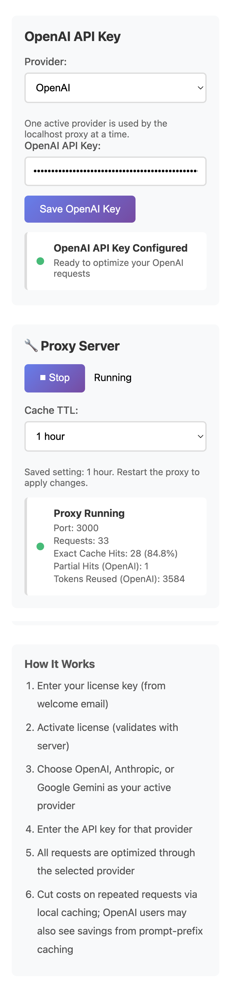

The core pattern
Install AI Optimizer, start the local proxy, then route compatible requests through localhost first. The rest of the workflow can often stay mostly familiar.
Many tools do not need a rebuild. They just need one local endpoint change so repeated requests can pass through a local control layer first.
For many OpenAI-compatible tools, adding a local proxy is as simple as pointing the base URL to http://localhost:3000/v1 instead of the upstream provider endpoint.
Install AI Optimizer, start the local proxy, then route compatible requests through localhost first. The rest of the workflow can often stay mostly familiar.
It is easier to adopt than a full rebuild and gives you one place to add caching, visibility, and provider-specific controls.
OPENAI_BASE_URL=http://localhost:3000/v1
Scripts, local tools, automations, cron jobs, and repeat-heavy developer workflows are all strong fits for this kind of low-friction routing change.
Highly custom tools may use a different variable or client config pattern, but the underlying idea is still to route requests through the local proxy path.
AI Optimizer gives OpenAI-compatible tools a practical localhost path for caching, visibility, and repeat-request control.